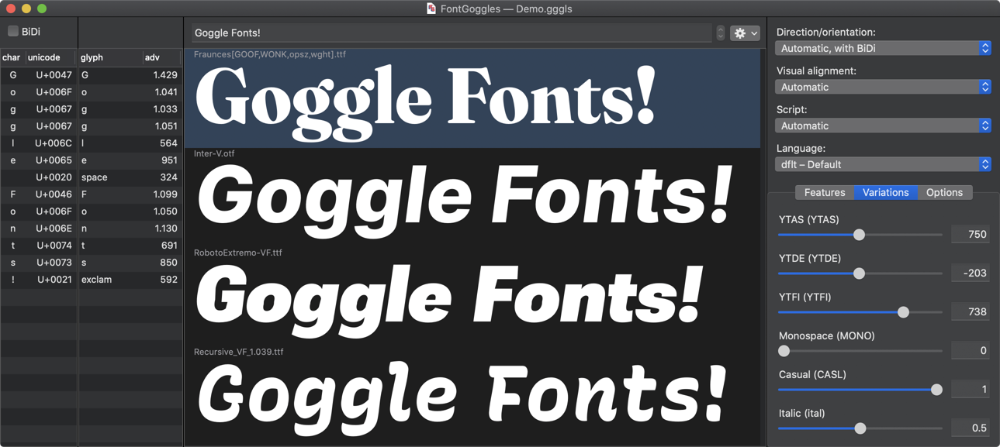
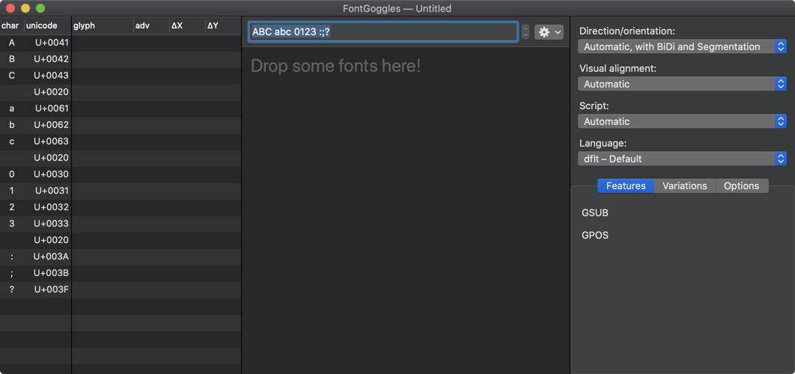
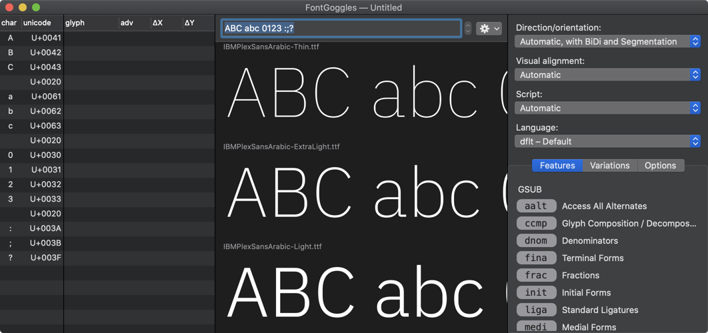
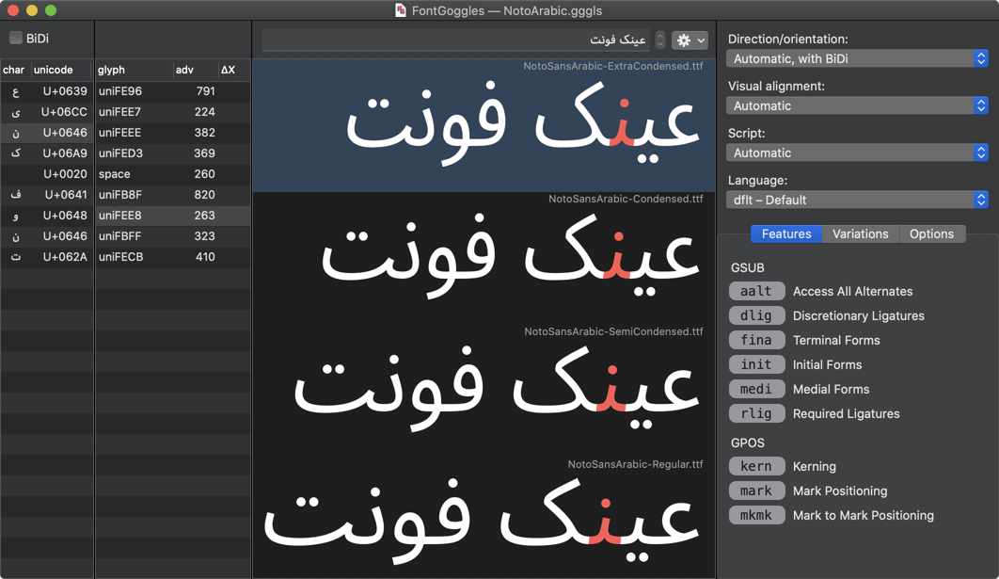
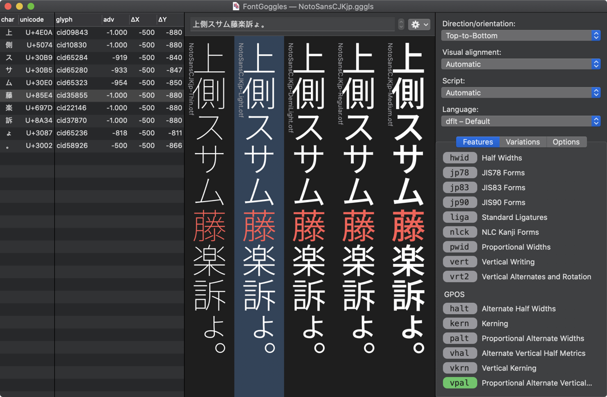
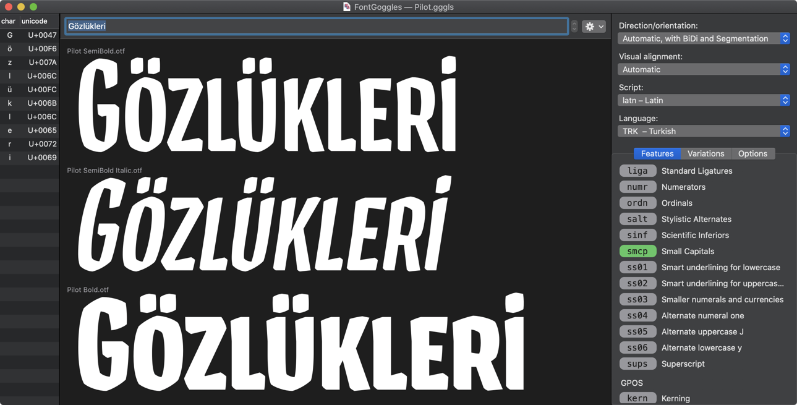
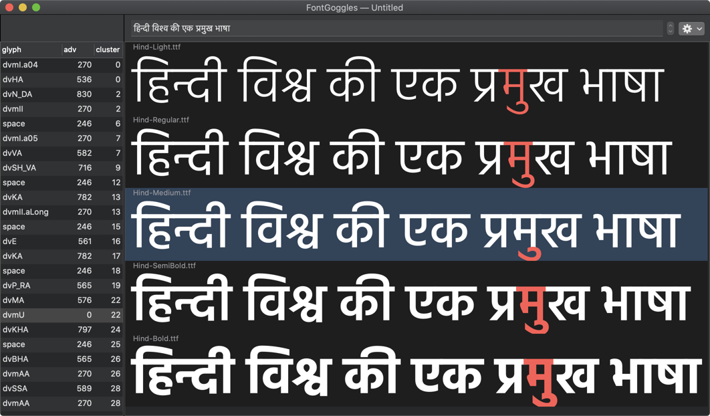
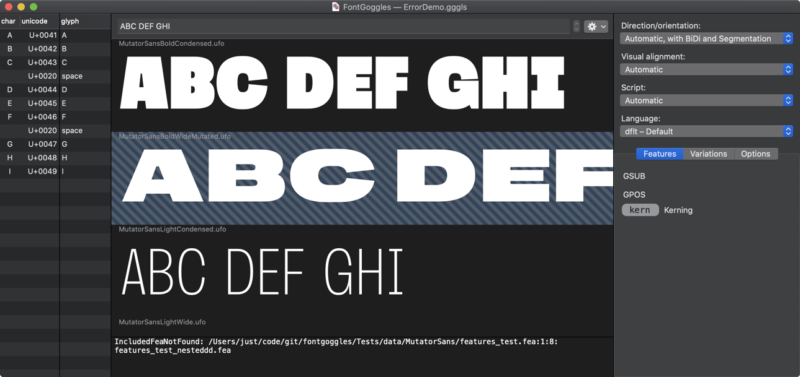
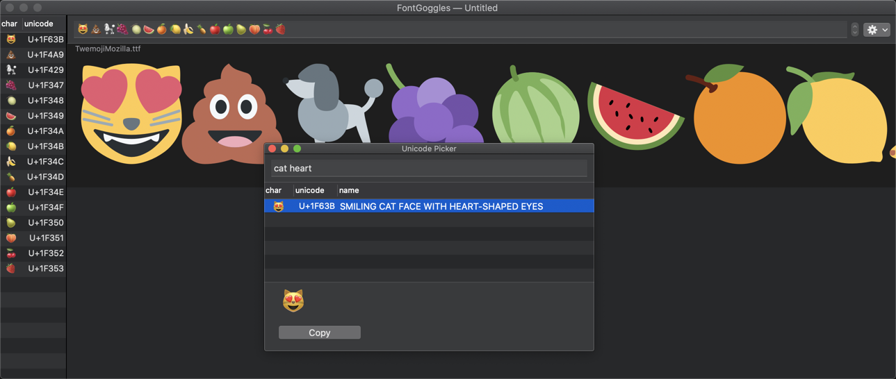

Interactive Previewing and Comparing
FontGoggles is a font viewer for various font formats. It is a desktop application for macOS. It is free and open source.
The main focus is text behavior, specifically text shaping and variation behavior.
You can download the latest release here.
The following font formats are supported:
Core features:

Stephen Nixon: “Super nice! I really love how this lets me compare the same variable axes across multiple fonts. It’s super interesting to visually compare how different fonts handle wght, opsz, etc. I also love that I can put this in my mac dock and drag font files directly onto it, rather than booting up a browser to test things. And the light/dark modes are right on point.”
Thomas Thiemich: “The most impressive feature of this tool so far is its speed — it’s quite impressive how fast it handles multiple fonts or variable fonts.”
Drop some fonts (or folders with fonts) onto the application, or launch the application, and drop some fonts onto the window.
A new, empty window looks like this:

After dropping some fonts it will look like this:

On the left hand side of the FontGoggles window there are two lists.
The left-most one is the Character list, which shows the entered characters and their Unicode values.
By default, characters are listed in logical order (first-to-last, in the natural writing direction of the script). However, when the “BiDi” checkbox is checked, it shows the entered characters after BiDirectional processing, which reorders them left-to-right. The “BiDi” checkbox does not affect the text display and is only available if BiDi processing is enabled (see the next section about “Text settings”).
The second list is the Glyph list, which can show information about the rendered glyphs, such as their names, advance values and positioning. Since this information is font-specific, it only shows information when exactly one font is selected (or when only one font has been opened).
The glyphs in the Glyph list are ordered from left to right in visual order, or from top to bottom in vertical mode.

Selecting items in the Character list will reflect the selection in the Glyphs list and vice versa. A single glyph can belong to multiple characters (for example in the case of ligatures), or vice versa.
Characters and glyphs are “clustered” by the shaping engine (HarfBuzz), and the Glyph list contains a column named “cluster” that shows the cluster number for each glyph. For more in-depth information see the HarfBuzz documentation. Selecting a character or glyph in one list will select the entire cluster in the other list.
Both lists can be scrolled horizontally or resized to reveal more information, and columns can be rearranged by dragging them around.
You can copy information from both Character and Glyph lists by selecting rows or columns and hit ⌘-C. Select multiple rows or columns by holding the Command key while clicking further items. For example, click on the “glyph” header in the Glyph list to select the glyph name column, the hit ⌘-C to copy the sequence of glyph names to the clipboard. If multiple columns are involved in the selection, the clipboard data will be tab-separated, ready to be pasted into a spreadsheet.
The Font list is the central section of the FontGoggles window. Font files can be dropped here, fonts can be selected, rearranged by dragging them around, or removed from the list with the delete key.
You can control-click on a font to get a contextual menu. The menu item there is to reveal the font in the Finder.
Fonts can also be dragged to other applications, which is equivalent to dragging them from the finder. You can also drag and drop fonts between FontGoggles windows.
At the top right of the FontGoggles window you find four buttons with popup menus:
The Direction/orientation menu has six options:
The Visual alignment button controls how the rendered text is visually aligned within the window. Its menu has four options:
In vertical mode, the options are Automatic, Top, Bottom and Center.

The Script button overrides the automatic detection of the script by HarfBuzz.
The Language button allows you to specify for which language any language-specific lookups will be activated.

The Features panel shows the superset of GSUB and GPOS features of all opened fonts. You can click feature tags to enable them (green), disable them (red) or use their default setting (gray).
The Variations panel shows sliders for all axes defined in the opened fonts. The minimum and maximum values for an axis are the lowest and highest values found in all opened fonts that have that axis.
When multiple variable fonts (and/or .designspace files) are opened, all axes in all open fonts are set to their respective default values. However, since this value can be different per font, the slider will in that case show an arbitrary position, and the numeric field will be empty as a sign there is not a single possible value.
The Options panel has three sliders and a checkbox that affect the display of the text:
Most panels in the window are resizable, and some are collapsable. There are also “View” menu items to show and hide the collapsable panels:

Instead of typing the text into the text field, you may load an external text file, using the “Load Text File...” menu under “View”, or with the “gear” popup menu next to the text field.
Once loaded, you can navigate through the lines of the text file with the “stepper” control next to the text field. The “View” menu has shortcuts for this: ⌘-arrow-key-up and ⌘-arrow-key-down to go to the previous or next line respectively.
You can keep editing the text file in a text editor while it is loaded in FontGoggles: it will reload the text file and show the changes.
You can save a window as a .gggls project file. Apart from the viewed
fonts, it will store all text, formatting and window settings.
Note: The file stores relative paths to the font files, so its location is related on the location of the font files. They can move together, but if sources move or the project file moves, the source references in the project file become invalid.
If a font gets changed on-disk by another application, FontGoggles will reload it and show the updated version. For example, this happens, when you:
Note: FontGoggles does its very best to reload as quickly as possible, but for .ufo and .designspace it may have to re-compile OpenType features, and the time needed depends on the complexity of the font.
When an error or warning occurs during the loading of a font, the font list will show that by highlighting the font with a diagonally striped background. To view the error details, click on the font, and the compile output panel at the bottom of the font list will appear.

FontGoggles provides its own Unicode Picker, under the “Edit” menu: “Unicode Picker”, shortcut ⌘-U. It allows you to find a Unicode character by name.
You can use multiple search terms: each additional term will narrow down the result. It searches by prefix, so you can for example type “ara let” to find Arabic letters.
Double click a character from the results to insert it in the front-most FontGoggles window. Alternatively you can copy selected character from the results list with the “Copy” button, or by typing ⌘-C.

Instead of searching by Unicode name, you can enter a Unicode hex
value, such as 1F63B or with a U+, 0x, u or uni prefix.
These are examples of valid Unicode literal search terms:
1F63BU+1F63B0x1F63Bu1F63Buni1234fontmake
toolchain, therefore source previews match binary fonts as built with
fontmakePlease open an issue on the FontGoggles repository.
FontGoggles was written by Just van Rossum and funded by GoogleFonts.